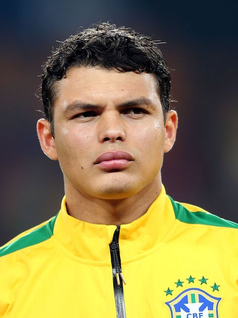

O Sheriff da nação brasileira

Mais conhecido como "Sheriff"
Thiago Emiliano da Silva (Rio de Janeiro, 22 de setembro de 1984) é um futebolista brasileiro que atua como zagueiro. Atualmente joga no Chelsea.
- Nome completo:Thiago Emiliano sa silva
- Data de nascimento:22 de setembro de 1984(38 anos)
- Local de nascimento:Rio de janeiro(RJ), Brasil
clique aqui para saber mais sobre o jogador